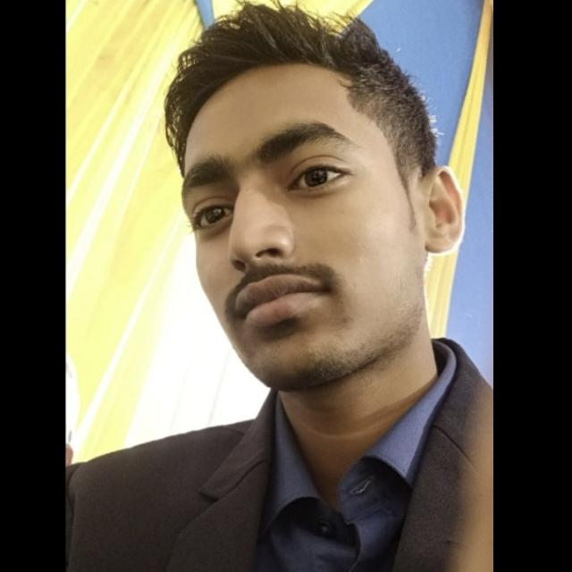

click on youtube
Autobiography of Sujeet Kumar
My name is Sujeet Kumar, and as I sit down to pen this autobiography, I am struck by the journey that has shaped my life—a journey that began in the quiet confines of my childhood and evolved into a tapestry of experiences and aspirations. Born on a crisp winter morning in a small village in Bihar, India, my story is one of humble beginnings and relentless pursuit of dreams.
My early years were shaped by the simplicity of rural life. Growing up in a modest family, my parents—both educators—instilled in me the values of hard work and perseverance. They were my first teachers, not only in the conventional sense but in the broader aspects of life. My father, a dedicated school principal, and my mother, a passionate school teacher, were embodiments of the virtues of diligence and commitment. Their unwavering support and encouragement became the bedrock upon which I built my aspirations.
Education was always a priority in our household, and I excelled academically from a young age. My fascination with learning was nurtured by a combination of supportive teachers and a family environment that celebrated curiosity and intellectual growth. I vividly remember the excitement of winning my first academic award—a moment that ignited in me a lifelong love for learning and a desire to make a mark in the world.
My academic journey took me from the local school in my village to a prestigious high school in the city. The transition was both exhilarating and challenging. Adapting to a new environment, meeting diverse people, and facing academic pressures were significant hurdles. However, my experiences in the city broadened my horizons and prepared me for the greater challenges that lay ahead. I embraced these changes with an open mind and an eagerness to learn, traits that have guided me throughout my life.
After completing high school with top honors, I pursued my undergraduate degree in Engineering at the Indian Institute of Technology (IIT) Delhi. The rigorous academic environment at IIT was a transformative period in my life. It was here that I was exposed to cutting-edge technology and innovative thinking. I specialized in Computer Science, a field that fascinated me with its potential to solve real-world problems and drive progress.
During my time at IIT Delhi, I engaged in various projects and internships that deepened my technical knowledge and honed my problem-solving skills. One of the highlights of my undergraduate years was leading a team project that developed a software solution for optimizing agricultural practices—a project close to my heart given my rural roots. This experience not only reinforced my technical skills but also taught me the importance of working collaboratively to achieve common goals.
Upon graduating from IIT Delhi, I embarked on a career in the technology sector. My professional journey began with a role at a leading technology firm, where I worked on groundbreaking projects that leveraged artificial intelligence and machine learning. The work was challenging and demanding, but it was also incredibly rewarding. I had the opportunity to collaborate with brilliant minds, tackle complex problems, and contribute to innovative solutions that had a tangible impact on various industries.
As I advanced in my career, I realized that my true passion lay in entrepreneurship and creating meaningful change. This led me to co-found a tech startup focused on developing affordable and scalable technology solutions for underserved communities. The startup journey was filled with highs and lows, but it was a testament to the power of perseverance and vision. Our team worked tirelessly to develop products that could improve lives, from enhancing educational tools to providing better healthcare solutions.
Throughout my career, I have remained committed to giving back to my community. I have been involved in various philanthropic initiatives, including supporting education for underprivileged children and promoting digital literacy. These efforts are driven by a deep-seated belief in the transformative power of education and technology. I have seen firsthand how access to knowledge and resources can uplift individuals and communities, and I am dedicated to contributing to this cause.
Looking back on my journey, I am grateful for the experiences that have shaped me—both the triumphs and the challenges. Each phase of my life has taught me valuable lessons and contributed to my growth as a person and a professional. My roots in a small village, my academic achievements, my career in technology, and my entrepreneurial endeavors have all played a crucial role in defining who I am today.
As I continue to navigate the ever-evolving landscape of technology and innovation, I remain focused on my core values of integrity, creativity, and social impact. My journey is far from over, and I am excited about the future and the opportunities it holds. I hope to continue making a difference, inspiring others, and contributing to a better world through my work and my passions.
In closing, my story is a testament to the power of dreams, determination, and the unwavering support of family and mentors. It is a reminder that with hard work and perseverance, even the most modest beginnings can lead to extraordinary accomplishments. As I look forward to the future, I am filled with a sense of purpose and optimism, ready to embrace the new challenges and opportunities that lie ahead.
This autobiographical piece reflects a life of growth, achievement, and dedication, capturing both personal and professional aspects of Sujeet Kumar’s journey.